<!DOCTYPE html>
<!--
    Licensed to the Apache Software Foundation (ASF) under one
    or more contributor license agreements.  See the NOTICE file
    distributed with this work for additional information
    regarding copyright ownership.  The ASF licenses this file
    to you under the Apache License, Version 2.0 (the
    "License"); you may not use this file except in compliance
    with the License.  You may obtain a copy of the License at

    http://www.apache.org/licenses/LICENSE-2.0

    Unless required by applicable law or agreed to in writing,
    software distributed under the License is distributed on an
    "AS IS" BASIS, WITHOUT WARRANTIES OR CONDITIONS OF ANY
     KIND, either express or implied.  See the License for the
    specific language governing permissions and limitations
    under the License.
-->
<html>
    <head>
        <meta name="format-detection" content="telephone=no">
        <meta name="msapplication-tap-highlight" content="no">
        <meta name="viewport" content="user-scalable=no, initial-scale=1, maximum-scale=1, minimum-scale=1, width=device-width">
        <link rel="stylesheet" type="text/css" href="css/index.css">
        <!-- css -->
        <link rel="stylesheet" href="https://stackpath.bootstrapcdn.com/bootstrap/4.3.1/css/bootstrap.min.css" integrity="sha384-ggOyR0iXCbMQv3Xipma34MD+dH/1fQ784/j6cY/iJTQUOhcWr7x9JvoRxT2MZw1T" crossorigin="anonymous">
        <link rel="stylesheet" href="https://maxcdn.bootstrapcdn.com/font-awesome/4.7.0/css/font-awesome.min.css">
<link rel="stylesheet" href="https://cdn.jsdelivr.net/npm/leaflet.locatecontrol@[VERSION]/dist/L.Control.Locate.min.css" />

<script src="https://cdn.jsdelivr.net/npm/leaflet.locatecontrol@[VERSION]/dist/L.Control.Locate.min.js" charset="utf-8"></script>
        <!-- end css -->
        <title>LOKASI TAMAN DI SURABAYA</title>
        <style>
          body {
            padding: 0;
            margin: 0;
          }
          html, body, #mapid {
            height: 100%;
            width: 100%;
          }
        </style>
        <!-- css leaflet -->
        <link rel="stylesheet" href="https://unpkg.com/leaflet@1.3.1/dist/leaflet.css" integrity="sha512-Rksm5RenBEKSKFjgI3a41vrjkw4EVPlJ3+OiI65vTjIdo9brlAacEuKOiQ5OFh7cOI1bkDwLqdLw3Zg0cRJAAQ==" crossorigin=""/>
	      <!-- end css leaflet -->
        <!-- api leaflet -->
        <script src="https://unpkg.com/leaflet@1.3.1/dist/leaflet.js" integrity="sha512-/Nsx9X4HebavoBvEBuyp3I7od5tA0UzAxs+j83KgC8PU0kgB4XiK4Lfe4y4cgBtaRJQEIFCW+oC506aPT2L1zw==" crossorigin=""></script>
        <!-- end api leaflet -->
    </head>
    <body><tt>

      <div id="mapid" class="fixed-top"></div>
      <!-- Footer -->
      <center>
        <footer class="py-2 fixed-bottom" style="background:green;">
          <div class="container">
            <p class="m-0 text-center text-white h5">&raquo;LOKASI TAMAN&laquo;<br />SURABAYA</p>
            <p class="m-0 text-center text-white" style="opacity:0.5">kelompok1</p>
          </div>
          <!-- /.container -->
        </footer>
      </center>
      <script>   
        var map = L.map('mapid').setView([-7.26510, 112.74500],11.5);// longtitude, latitude surabaya
        L.tileLayer('https://api.tiles.mapbox.com/v4/{id}/{z}/{x}/{y}.png?access_token={accessToken}', {
          attribution: 'Edited by Diego, Erwin, Vico',
          maxZoom: 18,
          id: 'mapbox.streets',
          accessToken: 'pk.eyJ1IjoiYm95anVuZXQiLCJhIjoiY2p4aGo1eTFtMGRvNDN3bzlheGEyazQwbyJ9.otBsn1Adhoko6bovoTLfnQ' //api mapbox
        }).addTo(map);
        //
        var lc = L.control.locate({
    position: 'topright',
    strings: {
        title: "Show me where I am, yo!"
    }
}).addTo(map);
        lc.start();

        var myIcon = L.icon({
iconUrl: 'woods-marker.png',
iconSize: [40, 45], // size of the icon
});
        L.marker([-7.2639548, 112.7430015], {icon: myIcon}).addTo(map) // longtitude, latitude taman apsari
        .bindPopup("<table><tr><td colspan='3' align='center'>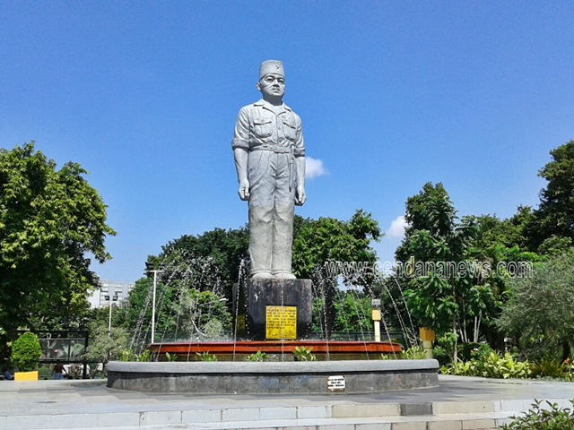</td></tr><tr><td colspan='3' align='center'><b>Taman Apsari<b></td></tr><tr><td colspan='3'>&nbsp;</td></tr><tr><td>Address</td><td>:</td><td>Jl. Gubernur Suryo, Embong Kaliasin, Genteng, Kota SBY, Jawa Timur</td></tr><tr><td colspan='3'><hr></td></tr><tr><td>Operational Time</td><td>:</td><td>24 jam</td></tr><tr><td colspan='3'><hr></td></tr></table>");


         L.marker([-7.2554208, 112.7433055], {icon: myIcon}).addTo(map) // longtitude, latitude taman buah undaan
        .bindPopup("<table><tr><td colspan='3' align='center'>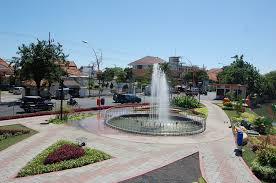</td></tr><td colspan='3' align='center'><b>Taman Buah Undaan<b></td></tr><tr><td colspan='3'>&nbsp;</td></tr><tr><td>Address</td><td>:</td><td>Jl. Undaan Kulon No.7, Peneleh, Genteng, Kota SBY, Jawa Timur</td></tr><tr><td colspan='3'><hr></td></tr><tr><td>Operational Time</td><td>:</td><td>24 jam</td></tr><tr><td colspan='3'><hr></td></tr></table>");
        L.marker([-7.2569818, 112.7438196], {icon: myIcon}).addTo(map) // longtitude, latitude Taman Ekspresi
        .bindPopup("<table><tr><td colspan='3' align='center'>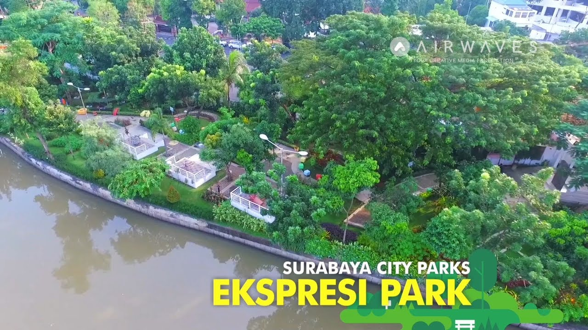</td></tr><tr><td colspan='3' align='center'><b>Taman Ekspresi<b></td></tr><tr><td colspan='3'>&nbsp;</td></tr><tr><td>Address</td><td>:</td><td>Jl. Genteng Kali No.67, Genteng, Kota SBY, Jawa Timur</td></tr><tr><td colspan='3'><hr></td></tr><tr><td>Operational Time</td><td>:</td><td>24 jam</td></tr><tr><td colspan='3'><hr></td></tr></table>");
       L.marker([ -7.2397514, 112.6282821],{icon: myIcon}).addTo(map) // longtitude, latitude Taman Pakal 
        .bindPopup("<table><tr><td colspan='3' align='center'>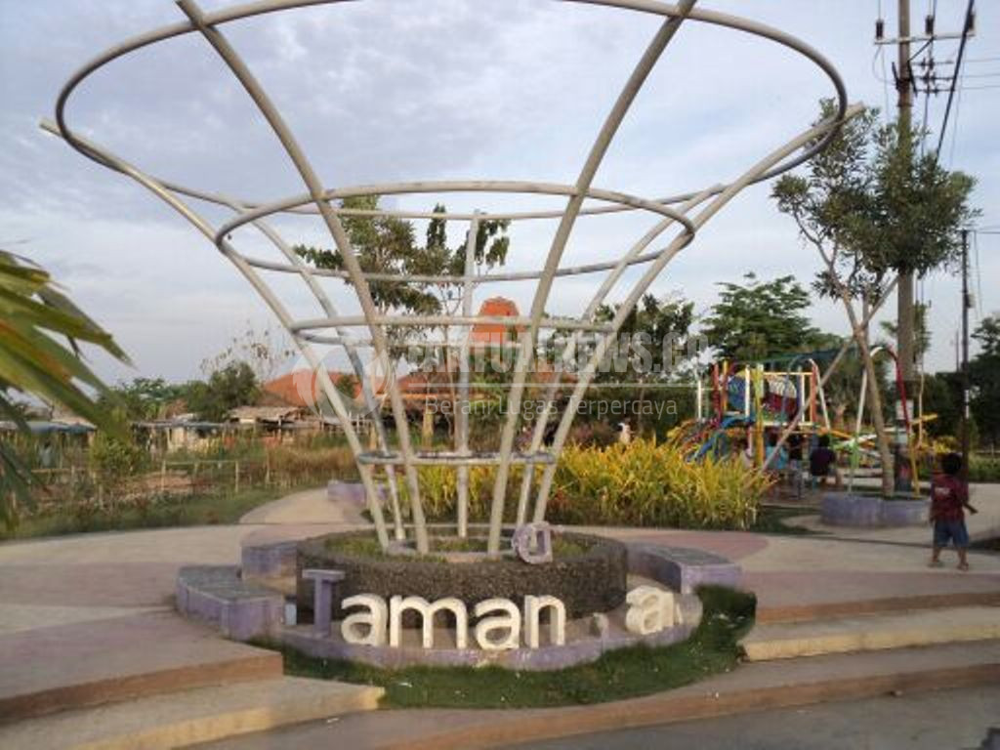</td></tr><tr><td colspan='3' align='center'><b>Taman Pakal<b></td></tr><tr><td colspan='3'>&nbsp;</td></tr><tr><td>Address</td><td>:</td><td>Jl. Raya Babat Jerawat No.1A, Babat Jerawat, Pakal, Kota SBY, Jawa Timur</td></tr><tr><td colspan='3'><hr></td></tr><tr><td>Operational Time</td><td>:</td><td>24 jam</td></tr><tr><td colspan='3'><hr></td></tr></table>");
        L.marker([-7.2412255, 112.6250796],{icon: myIcon}).addTo(map) // longtitude, latitude Taman Cahaya
        .bindPopup("<table><tr><td colspan='3' align='center'>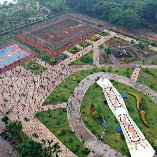</td></tr><tr><td colspan='3' align='center'><b>Taman Cahaya<b></td></tr><tr><td colspan='3'>&nbsp;</td></tr><tr><td>Address</td><td>:</td><td>Jl. Raya Pakal, Pakal, Kota SBY, Jawa Timur</td></tr><tr><td colspan='3'><hr></td></tr><tr><td>Operational Time</td><td>:</td><td>24 jam</td></tr><tr><td colspan='3'><hr></td></tr></table>");
        L.marker([-7.2683890, 112.7386828],{icon: myIcon}).addTo(map) // longtitude, latitude Taman M Duryat
        .bindPopup("<table><tr><td colspan='3' align='center'>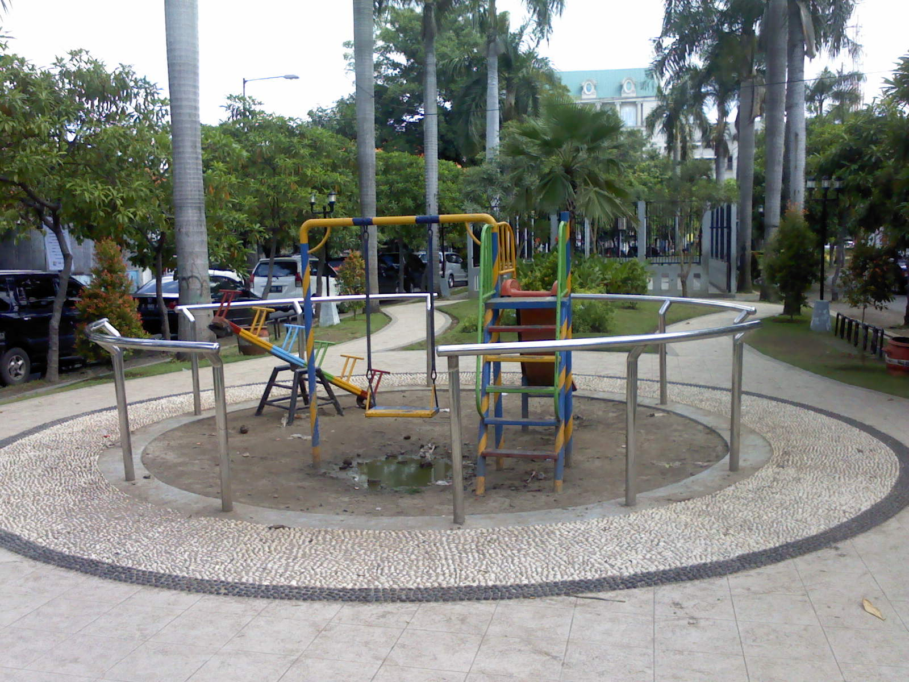</td></tr><tr><td colspan='3' align='center'><b>Taman M Duryat<b></td></tr><tr><td colspan='3'>&nbsp;</td></tr><tr><td>Address</td><td>:</td><td>Jl. Kombes Pol. Moh. Duryat, Kota SBY, Jawa Timur</td></tr><tr><td colspan='3'><hr></td></tr><tr><td>Operational Time</td><td>:</td><td>24 jam</td></tr><tr><td colspan='3'><hr></td></tr></table>");
        L.marker([-7.2550969, 112.7560399],{icon: myIcon}).addTo(map) // longtitude, latitude Taman Teratai Surabaya
        .bindPopup("<table><tr><td colspan='3' align='center'></td></tr><tr><td colspan='3' align='center'><b>Taman Teratai Surabaya<b></td></tr><tr><td colspan='3'>&nbsp;</td></tr><tr><td>Address</td><td>:</td><td>Jl. Teratai No.4, Tambaksari, Kota SBY, Jawa Timur</td></tr><tr><td colspan='3'><hr></td></tr><tr><td>Operational Time</td><td>:</td><td>24 jam</td></tr><tr><td colspan='3'><hr></td></tr></table>");
        L.marker([-7.2555525, 112.7534035],{icon: myIcon}).addTo(map) // longtitude, latitude Taman Paliatif
        .bindPopup("<table><tr><td colspan='3' align='center'>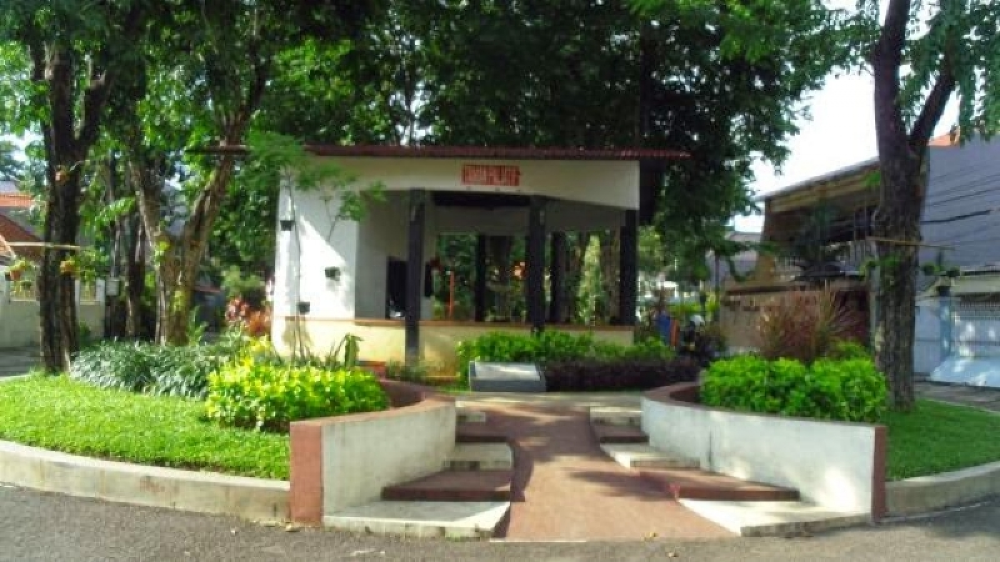</td></tr><tr><td colspan='3' align='center'><b>Taman Paliatif<b></td></tr><tr><td colspan='3'>&nbsp;</td></tr><tr><td>Address</td><td>:</td><td>Jl. Kesumba, Tambaksari, Kota SBY, Jawa Timur</td></tr><tr><td colspan='3'><hr></td></tr><tr><td>Operational Time</td><td>:</td><td>24 jam</td></tr><tr><td colspan='3'><hr></td></tr></table>");
        L.marker([-7.2730165, 112.7448428],{icon: myIcon}).addTo(map) // longtitude, latitude Taman Lalu Lintas
        .bindPopup("<table><tr><td colspan='3' align='center'>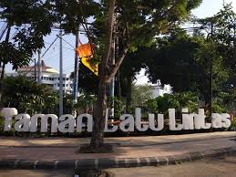</td></tr><tr><td colspan='3' align='center'><b>Taman Lalu Lintas<b></td></tr><tr><td colspan='3'>&nbsp;</td></tr><tr><td>Address</td><td>:</td><td>Jl. Karimun Jawa, Kota SBY, Jawa Timur</td></tr><tr><td colspan='3'><hr></td></tr><tr><td>Operational Time</td><td>:</td><td>24 jam</td></tr><tr><td colspan='3'><hr></td></tr></table>");
        L.marker([-7.2601859, 112.7469685],{icon: myIcon}).addTo(map) // longtitude, latitude Taman Surya
        .bindPopup("<table><tr><td colspan='3' align='center'></td></tr><tr><td colspan='3' align='center'><b>Taman Surya<b></td></tr><tr><td colspan='3'>&nbsp;</td></tr><tr><td>Address</td><td>:</td><td>Jl. Taman Surya, Ketabang, Genteng, Kota SBY, Jawa Timur</td></tr><tr><td colspan='3'><hr></td></tr><tr><td>Operational Time</td><td>:</td><td>24 jam</td></tr><tr><td colspan='3'><hr></td></tr></table>");
        L.marker([-7.2951839, 112.8035388],{icon: myIcon}).addTo(map) // longtitude, latitude Taman Harmoni
        .bindPopup("<table><tr><td colspan='3' align='center'>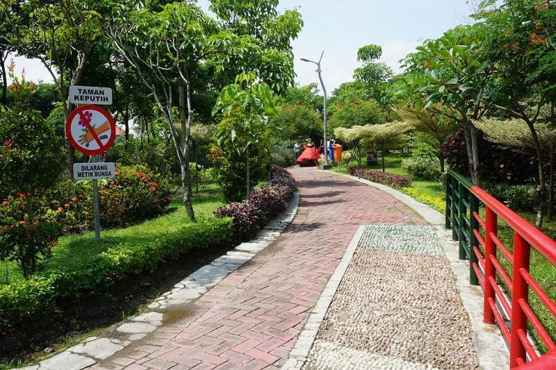</td></tr><tr><td colspan='3' align='center'><b>Taman Harmoni<b></td></tr><tr><td colspan='3'>&nbsp;</td></tr><tr><td>Address</td><td>:</td><td>Jl. Keputih Tegal Timur II No.249, Keputih, Sukolilo, Kota SBY, Jawa Timur</td></tr><tr><td colspan='3'><hr></td></tr><tr><td>Operational Time</td><td>:</td><td>24 jam</td></tr><tr><td colspan='3'><hr></td></tr></table>");
        L.marker([-7.2998314, 112.7310396],{icon: myIcon}).addTo(map) // longtitude, latitude Taman Ronggolawe
        .bindPopup("<table><tr><td colspan='3' align='center'>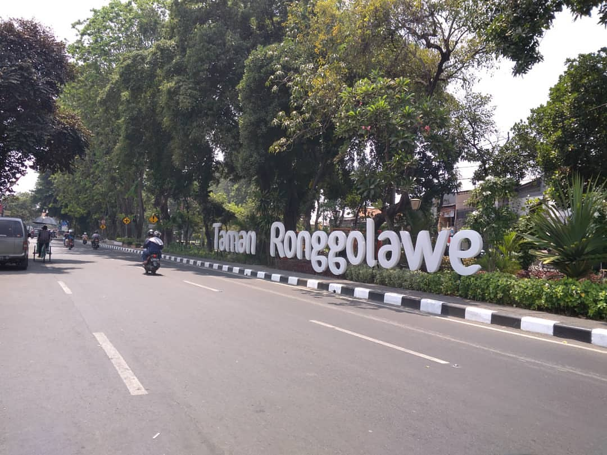</td></tr><tr><td colspan='3' align='center'><b>Taman Ronggolawe<b></td></tr><tr><td colspan='3'>&nbsp;</td></tr><tr><td>Address</td><td>:</td><td>Jl. Joyoboyo, Sawunggaling, Wonokromo, Kota SBY, Jawa Timur</td></tr><tr><td colspan='3'><hr></td></tr><tr><td>Operational Time</td><td>:</td><td>24 jam</td></tr><tr><td colspan='3'><hr></td></tr></table>");
        L.marker([-7.3275726, 112.7311435],{icon: myIcon}).addTo(map) // longtitude, latitude Taman Pelangi
        .bindPopup("<table><tr><td colspan='3' align='center'>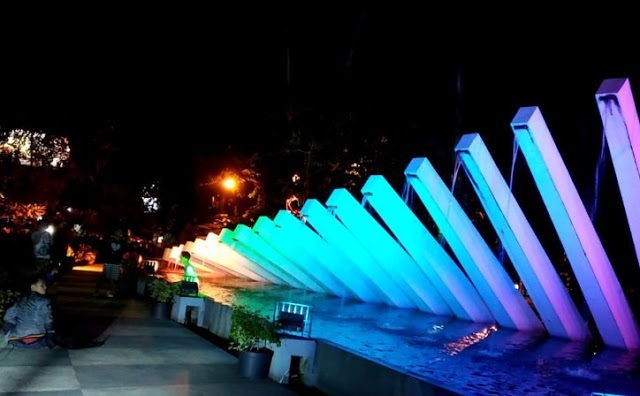</td></tr><tr><td colspan='3' align='center'><b>Taman Pelangi<b></td></tr><tr><td colspan='3'>&nbsp;</td></tr><tr><td>Address</td><td>:</td><td>Jl. Ahmad Yani No.138, Gayungan, Kota SBY, Jawa Timur</td></tr><tr><td colspan='3'><hr></td></tr><tr><td>Operational Time</td><td>:</td><td>24 jam</td></tr><tr><td colspan='3'><hr></td></tr></table>");
        L.marker([-7.3143000, 112.7141149],{icon: myIcon}).addTo(map) // longtitude, latitude Taman Jangkar
        .bindPopup("<table><tr><td colspan='3' align='center'>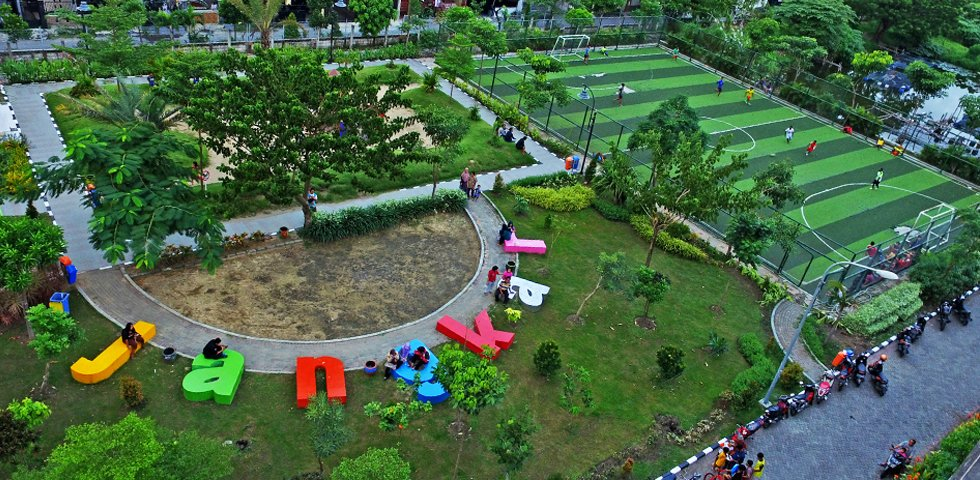</td></tr><tr><td colspan='3' align='center'><b>Taman Jangkar<b></td></tr><tr><td colspan='3'>&nbsp;</td></tr><tr><td>Address</td><td>:</td><td>Jl. Jambangan, Surabaya City, East Java</td></tr><tr><td colspan='3'><hr></td></tr><tr><td>Operational Time</td><td>:</td><td>24 jam</td></tr><tr><td colspan='3'><hr></td></tr></table>");
        L.marker([-7.2361141, 112.7378174],{icon: myIcon}).addTo(map) // longtitude, latitude Taman Sejarah
        .bindPopup("<table><tr><td colspan='3' align='center'></td></tr><tr><td colspan='3' align='center'><b>Taman Sejarah<b></td></tr><tr><td colspan='3'>&nbsp;</td></tr><tr><td>Address</td><td>:</td><td>Jl. Rajawali, Krembangan Sel., Krembangan, Kota SBY, Jawa Timur</td></tr><tr><td colspan='3'><hr></td></tr><tr><td>Operational Time</td><td>:</td><td>24 jam</td></tr><tr><td colspan='3'><hr></td></tr></table>");
        L.marker([-7.2364439, 112.7339373],{icon: myIcon}).addTo(map) // longtitude, latitude Taman Krembangan
        .bindPopup("<table><tr><td colspan='3' align='center'>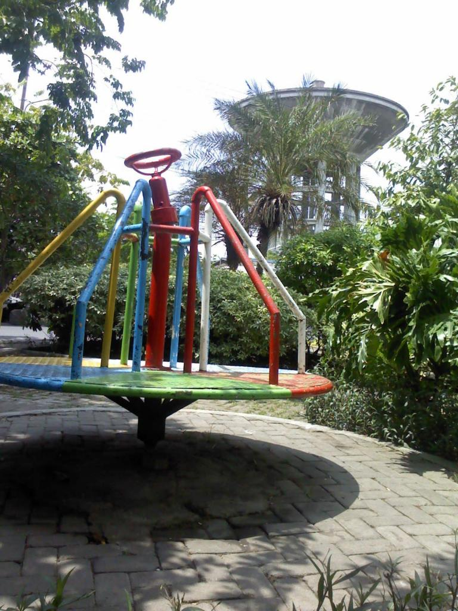</td></tr><tr><td colspan='3' align='center'><b>Taman Krembangan<b></td></tr><tr><td colspan='3'>&nbsp;</td></tr><tr><td>Address</td><td>:</td><td>Jl. Krembangan Timur No.2-4, Krembangan Sel., Krembangan, Kota SBY, Jawa Timur</td></tr><tr><td colspan='3'><hr></td></tr><tr><td>Operational Time</td><td>:</td><td>24 jam</td></tr><tr><td colspan='3'><hr></td></tr></table>");
        L.marker([-7.2417225, 112.7333857],{icon: myIcon}).addTo(map) // longtitude, latitude Taman Kalongan
        .bindPopup("<table><tr><td colspan='3' align='center'>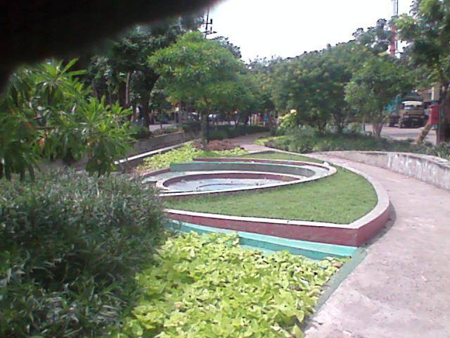</td></tr><tr><td colspan='3' align='center'><b>Taman Kalongan<b></td></tr><tr><td colspan='3'>&nbsp;</td></tr><tr><td>Address</td><td>:</td><td>Jl. Taman Kalongan, Krembangan Sel., Krembangan, Kota SBY, Jawa Timur</td></tr><tr><td colspan='3'><hr></td></tr><tr><td>Operational Time</td><td>:</td><td>24 jam</td></tr><tr><td colspan='3'><hr></td></tr></table>");
        L.marker([-7.2218764, 112.7317878],{icon: myIcon}).addTo(map) // longtitude, latitude Taman Barunawati
        .bindPopup("<table><tr><td colspan='3' align='center'></td></tr><tr><td colspan='3' align='center'><b>Taman Barunawati<b></td></tr><tr><td colspan='3'>&nbsp;</td></tr><tr><td>Address</td><td>:</td><td>Jl. Perak Barat, Krembangan, Kota SBY, Jawa Timur</td></tr><tr><td colspan='3'><hr></td></tr><tr><td>Operational Time</td><td>:</td><td>24 jam</td></tr><tr><td colspan='3'><hr></td></tr></table>");
        L.marker([-7.2710628, 112.7503601],{icon: myIcon}).addTo(map) // longtitude, latitude Taman Lansia 
        .bindPopup("<table><tr><td colspan='3' align='center'>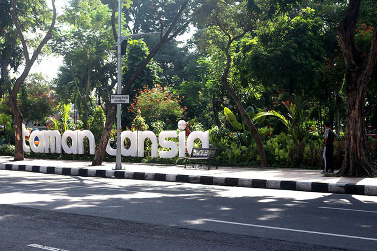</td></tr><tr><td colspan='3' align='center'><b>Taman Lansia<b></td></tr><tr><td colspan='3'>&nbsp;</td></tr><tr><td>Address</td><td>:</td><td>Jl. Raya Gubeng No.23, Gubeng, Kota SBY, Jawa Timur</td></tr><tr><td colspan='3'><hr></td></tr><tr><td>Operational Time</td><td>:</td><td>24 jam</td></tr><tr><td colspan='3'><hr></td></tr></table>");
        L.marker([-7.2766559, 112.7459120],{icon: myIcon}).addTo(map) // longtitude, latitude Taman Persahabatan
        .bindPopup("<table><tr><td colspan='3' align='center'>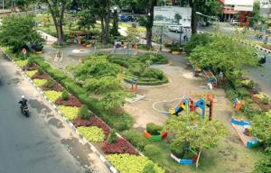</td></tr><tr><td colspan='3' align='center'><b>Taman Persahabatan<b></td></tr><tr><td colspan='3'>&nbsp;</td></tr><tr><td>Address</td><td>:</td><td>Jl. Sulawesi No.67, Ngagel, Wonokromo, Kota SBY, Jawa Timur</td></tr><tr><td colspan='3'><hr></td></tr><tr><td>Operational Time</td><td>:</td><td>24 jam</td></tr><tr><td colspan='3'><hr></td></tr></table>");
        L.marker([-7.2253674,112.7858754],{icon: myIcon}).addTo(map) // longtitude, latitude Taman Suroboyo
        .bindPopup("<table><tr><td colspan='3' align='center'>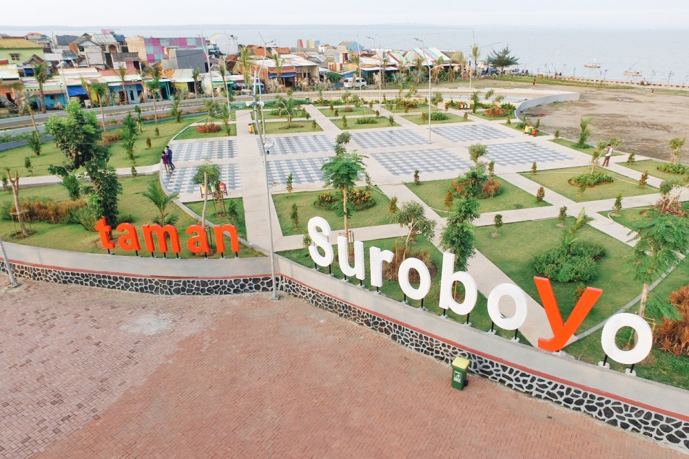</td></tr><tr><td colspan='3' align='center'><b>Taman Suroboyo<b></td></tr><tr><td colspan='3'>&nbsp;</td></tr><tr><td>Address</td><td>:</td><td>Jl. Pantai Kenjeran, Kedung Cowek, Kec. Bulak, Kota SBY, Jawa Timur</td></tr><tr><td colspan='3'><hr></td></tr><tr><td>Operational Time</td><td>:</td><td>24 jam</td></tr><tr><td colspan='3'><hr></td></tr></table>");
        L.marker([-7.2909692, 112.7397974],{icon: myIcon}).addTo(map) // longtitude, latitude Taman Bungkul
        .bindPopup("<table><tr><td colspan='3' align='center'></td></tr><tr><td colspan='3' align='center'><b>Taman Bungkul<b></td></tr><tr><td colspan='3'>&nbsp;</td></tr><tr><td>Address</td><td>:</td><td>Jl. Taman Bungkul, Darmo, Wonokromo, Kota SBY, Jawa Timur</td></tr><tr><td colspan='3'><hr></td></tr><tr><td>Operational Time</td><td>:</td><td>24 jam</td></tr><tr><td colspan='3'><hr></td></tr></table>");
        L.marker([ -7.2674686, 112.7442989],{icon: myIcon}).addTo(map) // longtitude, latitude Taman AIS Nasution
        .bindPopup("<table><tr><td colspan='3' align='center'>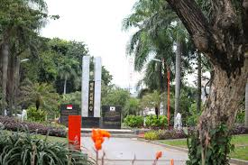</td></tr><tr><td colspan='3' align='center'><b>Taman AIS Nasution<b></td></tr><tr><td colspan='3'>&nbsp;</td></tr><tr><td>Address</td><td>:</td><td>Jl. Taman AIS Nasution, Embong Kaliasin, Genteng, Kota SBY, Jawa Timur</td></tr><tr><td colspan='3'><hr></td></tr><tr><td>Operational Time</td><td>:</td><td>24 jam</td></tr><tr><td colspan='3'><hr></td></tr></table>");
        L.marker([-7.2736277, 112.7439008],{icon: myIcon}).addTo(map) // longtitude, latitude Taman Keputran
        .bindPopup("<table><tr><td colspan='3' align='center'>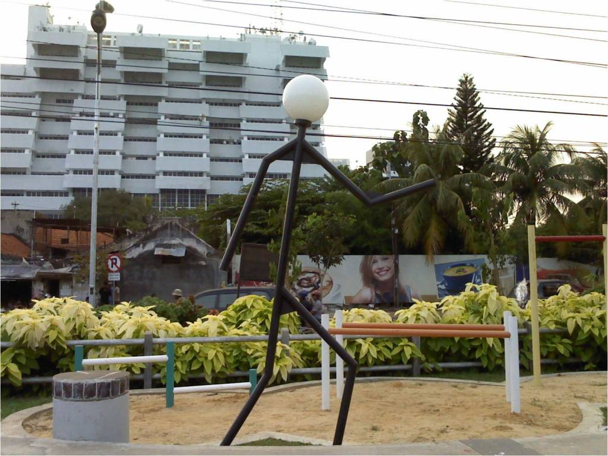</td></tr><tr><td colspan='3' align='center'><b>Taman Keputran<b></td></tr><tr><td colspan='3'>&nbsp;</td></tr><tr><td>Address</td><td>:</td><td>Jl. Kayon No.90, Embong Kaliasin, Genteng, Kota SBY, Jawa Timur</td></tr><tr><td colspan='3'><hr></td></tr><tr><td>Operational Time</td><td>:</td><td>24 jam</td></tr><tr><td colspan='3'><hr></td></tr></table>");
        L.marker([-7.2514310, 112.7549037],{icon: myIcon}).addTo(map) // longtitude, latitude Taman Mundu
        .bindPopup("<table><tr><td colspan='3' align='center'></td></tr><tr><td colspan='3' align='center'><b>Taman Mundu<b></td></tr><tr><td colspan='3'>&nbsp;</td></tr><tr><td>Address</td><td>:</td><td>Jl. Juwet, Tambaksari, Kota SBY, Jawa Timur</td></tr><tr><td colspan='3'><hr></td></tr><tr><td>Operational Time</td><td>:</td><td>24 jam</td></tr><tr><td colspan='3'><hr></td></tr></table>");
        L.marker([-7.2628922, 112.7496449],{icon: myIcon}).addTo(map) // longtitude, latitude Taman Prestasi
        .bindPopup("<table><tr><td colspan='3' align='center'>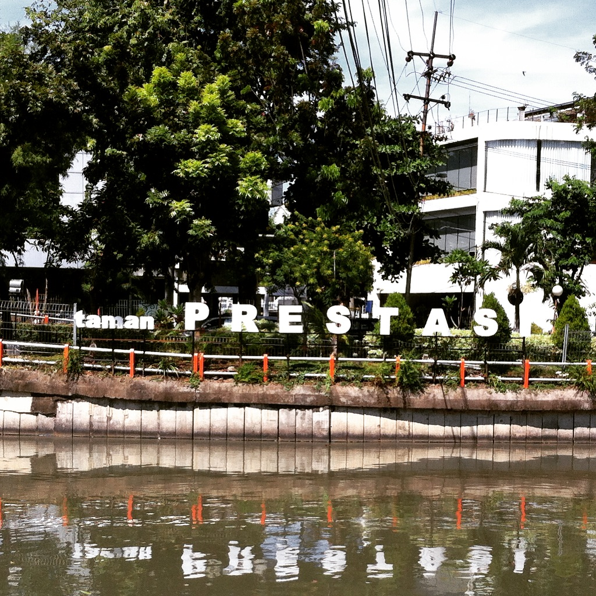</td></tr><tr><td colspan='3' align='center'><b>Taman Prestasi<b></td></tr><tr><td colspan='3'>&nbsp;</td></tr><tr><td>Address</td><td>:</td><td>Jl. Ketabang Kali No.6, Ketabang, Genteng, Kota SBY, Jawa Timur</td></tr><tr><td colspan='3'><hr></td></tr><tr><td>Operational Time</td><td>:</td><td>24 jam</td></tr><tr><td colspan='3'><hr></td></tr></table>");
        L.marker([-7.2832639, 112.7360482],{icon: myIcon}).addTo(map) // longtitude, latitude Taman Korea
        .bindPopup("<table><tr><td colspan='3' align='center'>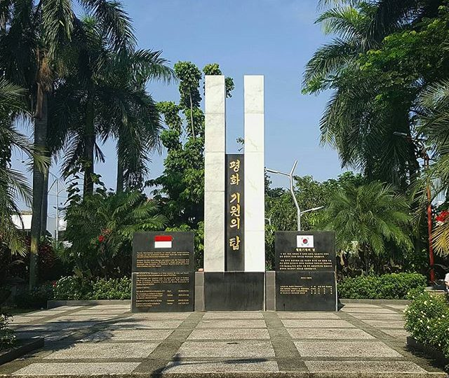</td></tr><tr><td colspan='3' align='center'><b>Taman Korea<b></td></tr><tr><td colspan='3'>&nbsp;</td></tr><tr><td>Address</td><td>:</td><td>Jl. Dr. Soetomo No.67, DR. Soetomo, Tegalsari</td></tr><tr><td colspan='3'><hr></td></tr><tr><td>Operational Time</td><td>:</td><td>24 jam</td></tr><tr><td colspan='3'><hr></td></tr></table>");
        L.marker([ -7.2946314, 112.7617857],{icon: myIcon}).addTo(map) // longtitude, latitude Taman Flora
        .bindPopup("<table><tr><td colspan='3' align='center'></td></tr><tr><td colspan='3' align='center'><b>Taman Flora<b></td></tr><tr><td colspan='3'>&nbsp;</td></tr><tr><td>Address</td><td>:</td><td>Jl. Raya Manyar No.80A, Baratajaya, Gubeng</td></tr><tr><td colspan='3'><hr></td></tr><tr><td>Operational Time</td><td>:</td><td>24 jam</td></tr><tr><td colspan='3'><hr></td></tr></table>");
        L.marker([-7.3185359, 112.7842347],{icon: myIcon}).addTo(map) // longtitude, latitude Taman Kunang Kunang
        .bindPopup("<table><tr><td colspan='3' align='center'>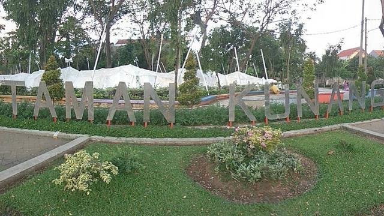</td></tr><tr><td colspan='3' align='center'><b>Taman Kunang Kunang<b></td></tr><tr><td colspan='3'>&nbsp;</td></tr><tr><td>Address</td><td>:</td><td>Jl. Penjaringan Tim., Penjaringan Sari, Rungkut, Kota SBY, Jawa Timur</td></tr><tr><td colspan='3'><hr></td></tr><tr><td>Operational Time</td><td>:</td><td>24 jam</td></tr><tr><td colspan='3'><hr></td></tr></table>");
        var geojsonLayer = new L.GeoJSON.AJAX("geojson.json");
        geojsonLayer.addTo(map);
        
      </script>
    </body>
</html>
